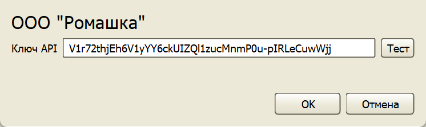
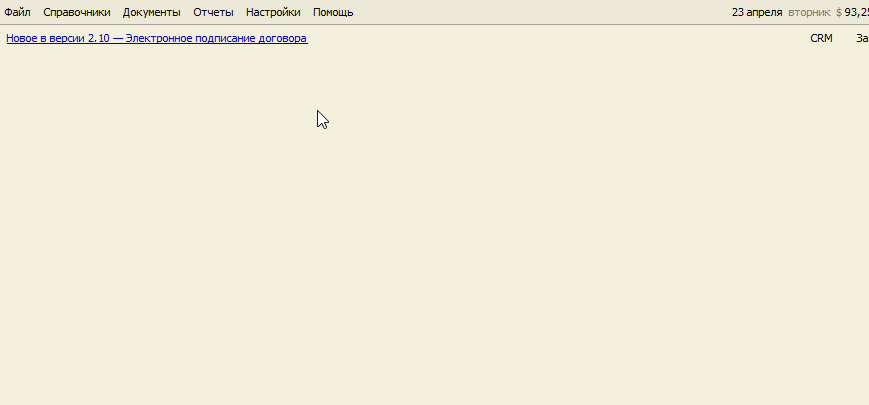

Настройка подписания документов простой электронной подписью
1) Настройка интеграции с сервисом Подпислон.
2) Установка LibreOffice.
3) Настройка шаблонов документов.
1) Настройка интеграции с сервисом Подпислон
Отправка SMS и хранение подписанных электронных документов обеспечивается партнерским сервисом Подпислон. Зарегистрируйтесь на этом сервисе по ссылке. Затем в разделе "Интеграции с CRM" сгенерируйте API-ключ и скопируйте его в буфер обмена.
Войдите в программу TourFX пользователем с ролью Администратор. В меню "Настройки" выберите пункт "Настройки ЭП" и в открывшейся форме вставьте скопированный API-ключ в поле. После этого по нажатию кнопки Тест должны ниже появиться название и ИНН вашей компании, введенные в Личном кабинете Подпислона.
Если у вас используется несколько юрлиц при оформлении договоров с клиентами, необходимо зарегистрировать в Подпислоне каждое юрлицо отдельно и ввести в программу ключ API для каждой регистрации.

2) Установка LibreOffice
Если на ваших компьютерах в качестве офисного пакет используется Microsoft Office, необходимо дополнительно установить LibreOffice на каждый компьютер. Дистрибутив можно скачать на этой странице.
3) Настройка шаблонов
Данная настройка позволяет определить шаблоны документов, которые будут отправляться клиенту для подписания электронно, а также задать шаблон названия документа, которое клиент будет видеть в полученном смс.
Войдите в программу TourFX пользователем с ролью Администратор. В меню "Настройки" выберите пункт "Шаблоны". В списке выберите шаблон Договора, который вы будете отправлять на электронную подпись, и нажмите кнопку "ЭП" (электронная подпись). В появившейся панели установите флажок "Использовать ЭП" и введите шаблон "Название документа". Это название файла клиент будет видеть, когда ему придёт смс с документом на просмотр и подписание. В шаблоне названия можно использовать теги как в шаблоне договора. Например, шаблон названия "Договор № [Номер] от [Дата]" будет преобразован подстановкой номера и даты заявки вместо соответствующих тегов.

Повторите настройку для всех шаблонов документов, которые вы хотите подписывать электронно.
Остались вопросы? Напишите нам на e-mail